事务&AOP
1. 事务管理
1.1 事务回顾
在数据库阶段我们已学习过事务了，我们讲到：
事务是一组操作的集合，它是一个不可分割的工作单位。事务会把所有的操作作为一个整体，一起向数据库提交或者是撤销操作请求。所以这组操作要么同时成功，要么同时失败。
怎么样来控制这组操作，让这组操作同时成功或同时失败呢？此时就要涉及到事务的具体操作了。
事务的操作主要有三步：
- 开启事务（一组操作开始前，开启事务）：start transaction / begin ;
- 提交事务（这组操作全部成功后，提交事务）：commit ;
- 回滚事务（中间任何一个操作出现异常，回滚事务）：rollback ;
1.2 Spring事务管理
1.2.1 案例
简单的回顾了事务的概念以及事务的基本操作之后，接下来我们看一个事务管理案例：解散部门 （解散部门就是删除部门）
需求：当部门解散了不仅需要把部门信息删除了，还需要把该部门下的员工数据也删除了。
步骤：
- 根据ID删除部门数据
- 根据部门ID删除该部门下的员工
代码实现：
- DeptServiceImpl
@Slf4j
@Service
public class DeptServiceImpl implements DeptService {
@Autowired
private DeptMapper deptMapper;
@Autowired
private EmpMapper empMapper;
//根据部门id，删除部门信息及部门下的所有员工
@Override
public void delete(Integer id){
//根据部门id删除部门信息
deptMapper.deleteById(id);
//删除部门下的所有员工信息
empMapper.deleteByDeptId(id);
}
}
- DeptMapper
@Mapper
public interface DeptMapper {
/**
* 根据id删除部门信息
* @param id 部门id
*/
@Delete("delete from dept where id = #{id}")
void deleteById(Integer id);
}
- EmpMapper
@Mapper
public interface EmpMapper {
//根据部门id删除部门下所有员工
@Delete("delete from emp where dept_id=#{deptId}")
public int deleteByDeptId(Integer deptId);
}
重启SpringBoot服务，使用postman测试部门删除：
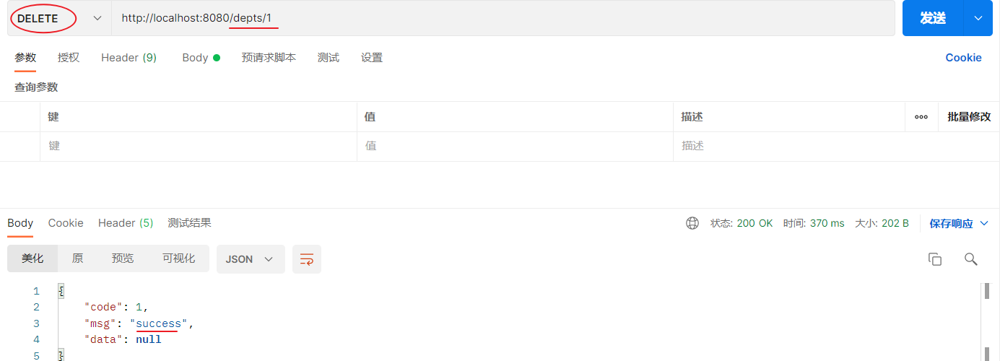
代码正常情况下，dept表和Em表中的数据已删除
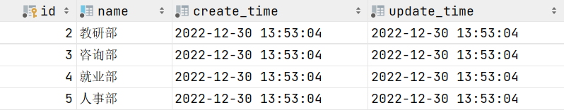
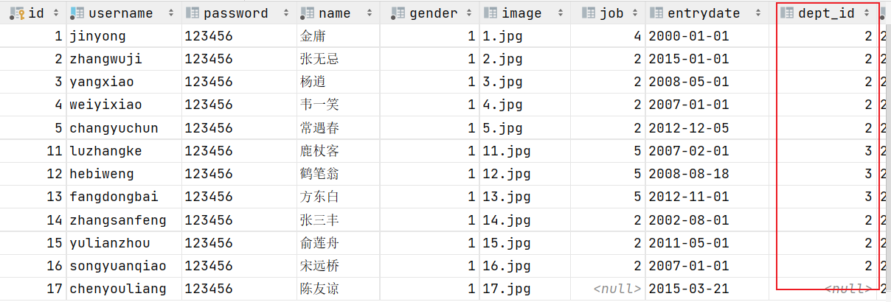
修改DeptServiceImpl类中代码，添加可能出现异常的代码：
@Slf4j
@Service
public class DeptServiceImpl implements DeptService {
@Autowired
private DeptMapper deptMapper;
@Autowired
private EmpMapper empMapper;
//根据部门id，删除部门信息及部门下的所有员工
@Override
public void delete(Integer id){
//根据部门id删除部门信息
deptMapper.deleteById(id);
//模拟：异常发生
int i = 1/0;
//删除部门下的所有员工信息
empMapper.deleteByDeptId(id);
}
}
重启SpringBoot服务，使用postman测试部门删除：
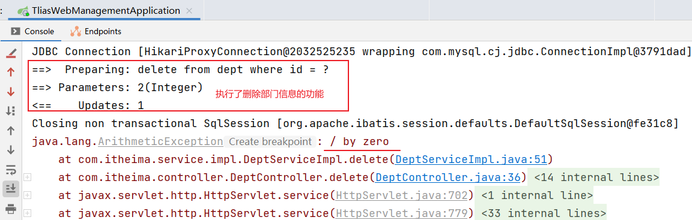
查看数据库表：
- 删除了2号部门
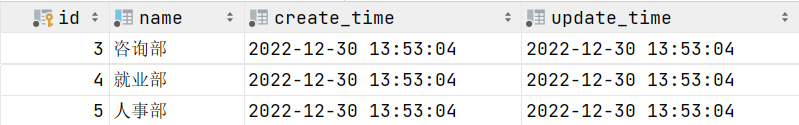
- 2号部门下的员工数据没有删除
以上程序出现的问题：即使程序运行抛出了异常，部门依然删除了，但是部门下的员工却没有删除，造成了数据的不一致。
1.2.2 原因分析
原因：
- 先执行根据id删除部门的操作，这步执行完毕，数据库表 dept 中的数据就已经删除了。
- 执行 1/0 操作，抛出异常
- 抛出异常之前，下面所有的代码都不会执行了，根据部门ID删除该部门下的员工，这个操作也不会执行 。
此时就出现问题了，部门删除了，部门下的员工还在，业务操作前后数据不一致。
而要想保证操作前后，数据的一致性，就需要让解散部门中涉及到的两个业务操作，要么全部成功，要么全部失败 。 那我们如何，让这两个操作要么全部成功，要么全部失败呢 ？
那就可以通过事务来实现，因为一个事务中的多个业务操作，要么全部成功，要么全部失败。
此时，我们就需要在delete删除业务功能中添加事务。
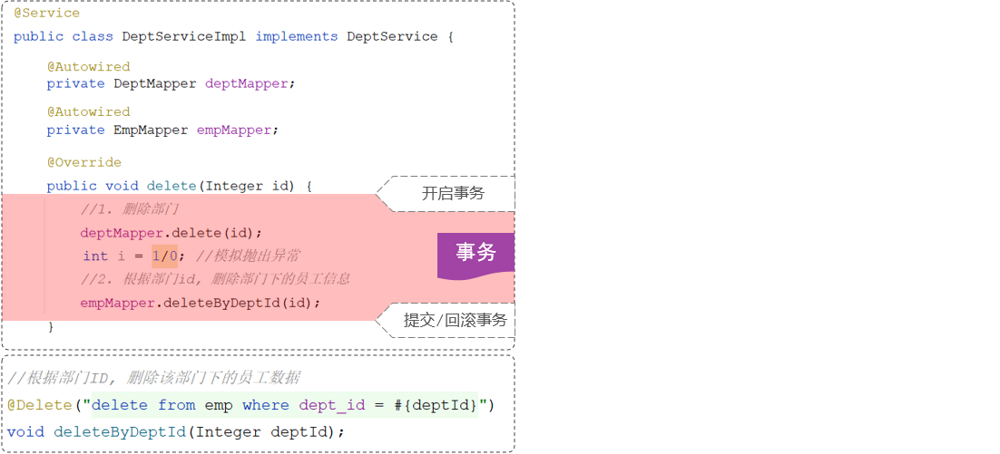
在方法运行之前，开启事务，如果方法成功执行，就提交事务，如果方法执行的过程当中出现异常了，就回滚事务。
思考：开发中所有的业务操作，一旦我们要进行控制事务，是不是都是这样的套路？
答案：是的。
所以在spring框架当中就已经把事务控制的代码都已经封装好了，并不需要我们手动实现。我们使用了spring框架，我们只需要通过一个简单的注解@Transactional就搞定了。
1.2.3 Transactional注解
@Transactional作用：就是在当前这个方法执行开始之前来开启事务，方法执行完毕之后提交事务。如果在这个方法执行的过程当中出现了异常，就会进行事务的回滚操作。
@Transactional注解：我们一般会在业务层当中来控制事务，因为在业务层当中，一个业务功能可能会包含多个数据访问的操作。在业务层来控制事务，我们就可以将多个数据访问操作控制在一个事务范围内。
@Transactional注解书写位置：
- 方法
- 当前方法交给spring进行事务管理
- 类
- 当前类中所有的方法都交由spring进行事务管理
- 接口
- 接口下所有的实现类当中所有的方法都交给spring 进行事务管理
接下来，我们就可以在业务方法delete上加上 @Transactional 来控制事务 。
@Slf4j
@Service
public class DeptServiceImpl implements DeptService {
@Autowired
private DeptMapper deptMapper;
@Autowired
private EmpMapper empMapper;
@Override
@Transactional //当前方法添加了事务管理
public void delete(Integer id){
//根据部门id删除部门信息
deptMapper.deleteById(id);
//模拟：异常发生
int i = 1/0;
//删除部门下的所有员工信息
empMapper.deleteByDeptId(id);
}
}
在业务功能上添加@Transactional注解进行事务管理后，我们重启SpringBoot服务，使用postman测试：
添加Spring事务管理后，由于服务端程序引发了异常，所以事务进行回滚。
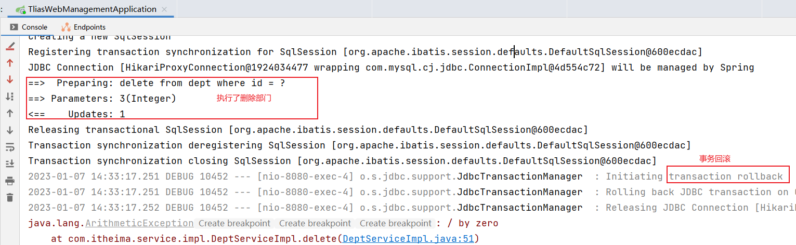
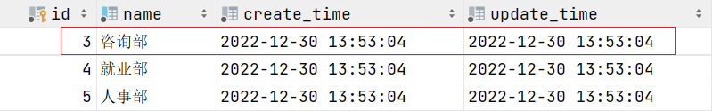
说明：可以在application.yml配置文件中开启事务管理日志，这样就可以在控制看到和事务相关的日志信息了
#spring事务管理日志
logging:
level:
org.springframework.jdbc.support.JdbcTransactionManager: debug
1.3 事务进阶
前面我们通过spring事务管理注解@Transactional已经控制了业务层方法的事务。接下来我们要来详细的介绍一下@Transactional事务管理注解的使用细节。我们这里主要介绍@Transactional注解当中的两个常见的属性：
- 异常回滚的属性：rollbackFor
- 事务传播行为：propagation
我们先来学习下rollbackFor属性。
1.3.1 rollbackFor
我们在之前编写的业务方法上添加了@Transactional注解，来实现事务管理。
@Transactional
public void delete(Integer id){
//根据部门id删除部门信息
deptMapper.deleteById(id);
//模拟：异常发生
int i = 1/0;
//删除部门下的所有员工信息
empMapper.deleteByDeptId(id);
}
以上业务功能delete()方法在运行时，会引发除0的算数运算异常(运行时异常)，出现异常之后，由于我们在方法上加了@Transactional注解进行事务管理，所以发生异常会执行rollback回滚操作，从而保证事务操作前后数据是一致的。
下面我们在做一个测试，我们修改业务功能代码，在模拟异常的位置上直接抛出Exception异常（编译时异常）
@Transactional
public void delete(Integer id) throws Exception {
//根据部门id删除部门信息
deptMapper.deleteById(id);
//模拟：异常发生
if(true){
throw new Exception("出现异常了~~~");
}
//删除部门下的所有员工信息
empMapper.deleteByDeptId(id);
}
说明：在service中向上抛出一个Exception编译时异常之后，由于是controller调用service，所以在controller中要有异常处理代码，此时我们选择在controller中继续把异常向上抛。
@DeleteMapping("/depts/{id}") public Result delete(@PathVariable Integer id) throws Exception { //日志记录 log.info("根据id删除部门"); //调用service层功能 deptService.delete(id); //响应 return Result.success(); }
重新启动服务后测试：
抛出异常之后事务会不会回滚
现有表中数据：
使用postman测试，删除5号部门
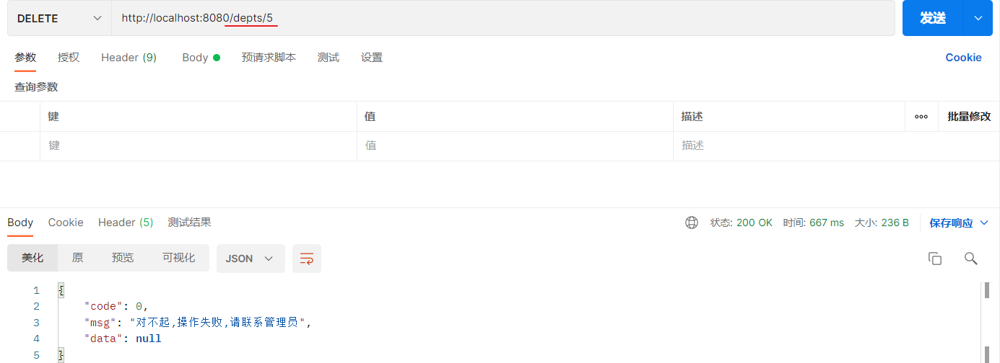
发生了Exception异常，但事务依然提交了
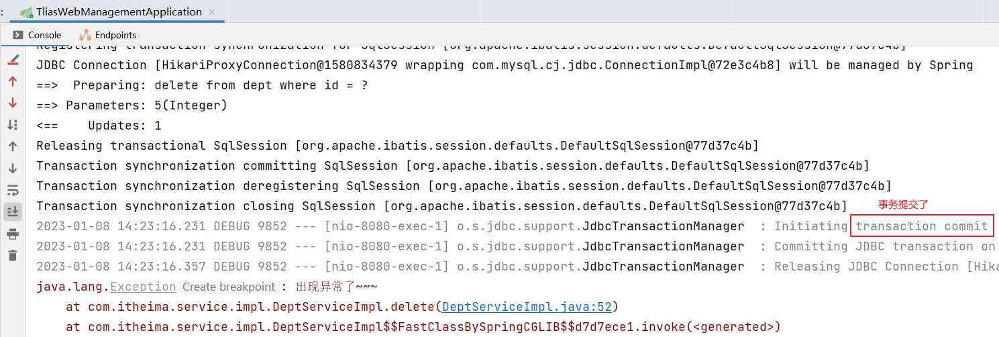
dept表中数据：
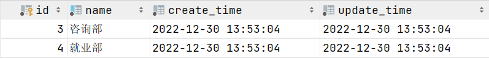
通过以上测试可以得出一个结论：默认情况下，只有出现RuntimeException(运行时异常)才会回滚事务。
假如我们想让所有的异常都回滚，需要来配置@Transactional注解当中的rollbackFor属性，通过rollbackFor这个属性可以指定出现何种异常类型回滚事务。
@Slf4j
@Service
public class DeptServiceImpl implements DeptService {
@Autowired
private DeptMapper deptMapper;
@Autowired
private EmpMapper empMapper;
@Override
@Transactional(rollbackFor=Exception.class)
public void delete(Integer id){
//根据部门id删除部门信息
deptMapper.deleteById(id);
//模拟：异常发生
int num = id/0;
//删除部门下的所有员工信息
empMapper.deleteByDeptId(id);
}
}
接下来我们重新启动服务，测试删除部门的操作：
控制台日志：执行了删除3号部门的操作， 因为异常又进行了事务回滚
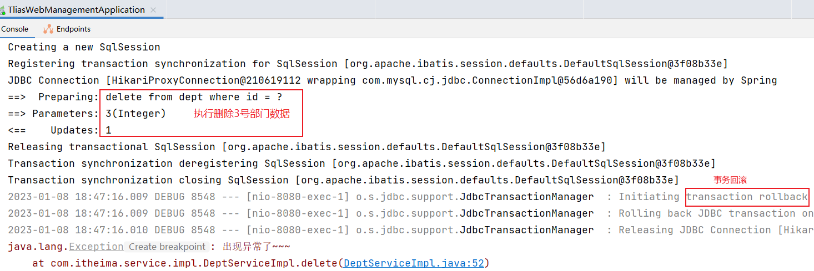
数据表：3号部门没有删除
结论：
- 在Spring的事务管理中，默认只有运行时异常 RuntimeException才会回滚。
- 如果还需要回滚指定类型的异常，可以通过rollbackFor属性来指定。
1.3.3 propagation
1.3.3.1 介绍
我们接着继续学习@Transactional注解当中的第二个属性propagation，这个属性是用来配置事务的传播行为的。
什么是事务的传播行为呢？
- 就是当一个事务方法被另一个事务方法调用时，这个事务方法应该如何进行事务控制。
例如：两个事务方法，一个A方法，一个B方法。在这两个方法上都添加了@Transactional注解，就代表这两个方法都具有事务，而在A方法当中又去调用了B方法。
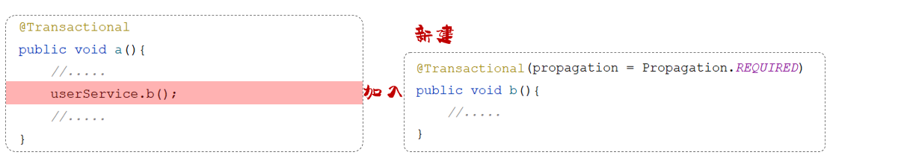
所谓事务的传播行为，指的就是在A方法运行的时候，首先会开启一个事务，在A方法当中又调用了B方法， B方法自身也具有事务，那么B方法在运行的时候，到底是加入到A方法的事务当中来，还是B方法在运行的时候新建一个事务？这个就涉及到了事务的传播行为。
我们要想控制事务的传播行为，在@Transactional注解的后面指定一个属性propagation，通过 propagation 属性来指定传播行为。接下来我们就来介绍一下常见的事务传播行为。
| 属性值 | 含义 |
|---|---|
| REQUIRED | 【默认值】需要事务，有则加入，无则创建新事务 |
| REQUIRES_NEW | 需要新事务，无论有无，总是创建新事务 |
| SUPPORTS | 支持事务，有则加入，无则在无事务状态中运行 |
| NOT_SUPPORTED | 不支持事务，在无事务状态下运行,如果当前存在已有事务,则挂起当前事务 |
| MANDATORY | 必须有事务，否则抛异常 |
| NEVER | 必须没事务，否则抛异常 |
| … |
对于这些事务传播行为，我们只需要关注以下两个就可以了：
- REQUIRED（默认值）
- REQUIRES_NEW
1.3.3.2 案例
接下来我们就通过一个案例来演示下事务传播行为propagation属性的使用。
**需求：**解散部门时需要记录操作日志
由于解散部门是一个非常重要而且非常危险的操作，所以在业务当中要求每一次执行解散部门的操作都需要留下痕迹，就是要记录操作日志。而且还要求无论是执行成功了还是执行失败了，都需要留下痕迹。
步骤：
- 执行解散部门的业务：先删除部门，再删除部门下的员工（前面已实现）
- 记录解散部门的日志，到日志表（未实现）
准备工作：
- 创建数据库表 dept_log 日志表：
create table dept_log(
id int auto_increment comment '主键ID' primary key,
create_time datetime null comment '操作时间',
description varchar(300) null comment '操作描述'
)comment '部门操作日志表';
- 引入资料中提供的实体类：DeptLog
@Data
@NoArgsConstructor
@AllArgsConstructor
public class DeptLog {
private Integer id;
private LocalDateTime createTime;
private String description;
}
- 引入资料中提供的Mapper接口：DeptLogMapper
@Mapper
public interface DeptLogMapper {
@Insert("insert into dept_log(create_time,description) values(#{createTime},#{description})")
void insert(DeptLog log);
}
- 引入资料中提供的业务接口：DeptLogService
public interface DeptLogService {
void insert(DeptLog deptLog);
}
- 引入资料中提供的业务实现类：DeptLogServiceImpl
@Service
public class DeptLogServiceImpl implements DeptLogService {
@Autowired
private DeptLogMapper deptLogMapper;
@Transactional //事务传播行为：有事务就加入、没有事务就新建事务
@Override
public void insert(DeptLog deptLog) {
deptLogMapper.insert(deptLog);
}
}
代码实现:
业务实现类：DeptServiceImpl
@Slf4j
@Service
//@Transactional //当前业务实现类中的所有的方法，都添加了spring事务管理机制
public class DeptServiceImpl implements DeptService {
@Autowired
private DeptMapper deptMapper;
@Autowired
private EmpMapper empMapper;
@Autowired
private DeptLogService deptLogService;
//根据部门id，删除部门信息及部门下的所有员工
@Override
@Log
@Transactional(rollbackFor = Exception.class)
public void delete(Integer id) throws Exception {
try {
//根据部门id删除部门信息
deptMapper.deleteById(id);
//模拟：异常
if(true){
throw new Exception("出现异常了~~~");
}
//删除部门下的所有员工信息
empMapper.deleteByDeptId(id);
}finally {
//不论是否有异常，最终都要执行的代码：记录日志
DeptLog deptLog = new DeptLog();
deptLog.setCreateTime(LocalDateTime.now());
deptLog.setDescription("执行了解散部门的操作，此时解散的是"+id+"号部门");
//调用其他业务类中的方法
deptLogService.insert(deptLog);
}
}
//省略其他代码...
}
测试:
重新启动SpringBoot服务，测试删除3号部门后会发生什么？
- 执行了删除3号部门操作
- 执行了插入部门日志操作
- 程序发生Exception异常
- 执行事务回滚（删除、插入操作因为在一个事务范围内，两个操作都会被回滚）
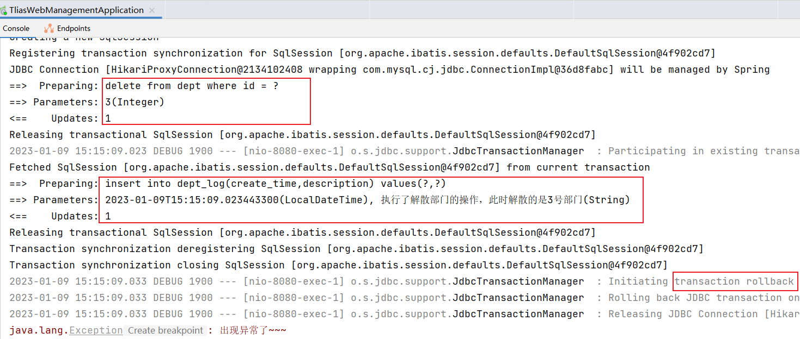
然后在dept_log表中没有记录日志数据
原因分析:
接下来我们就需要来分析一下具体是什么原因导致的日志没有成功的记录。
-
在执行delete操作时开启了一个事务
-
当执行insert操作时，insert设置的事务传播行是默认值REQUIRED，表示有事务就加入，没有则新建事务
-
此时：delete和insert操作使用了同一个事务，同一个事务中的多个操作，要么同时成功，要么同时失败，所以当异常发生时进行事务回滚，就会回滚delete和insert操作
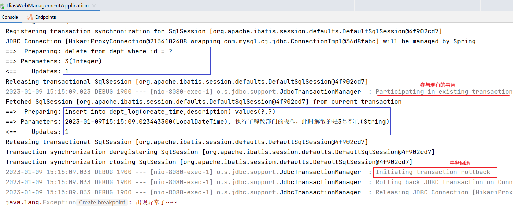
解决方案：
在DeptLogServiceImpl类中insert方法上，添加@Transactional(propagation = Propagation.REQUIRES_NEW)
Propagation.REQUIRES_NEW ：不论是否有事务，都创建新事务 ，运行在一个独立的事务中。
@Service
public class DeptLogServiceImpl implements DeptLogService {
@Autowired
private DeptLogMapper deptLogMapper;
@Transactional(propagation = Propagation.REQUIRES_NEW)//事务传播行为：不论是否有事务，都新建事务
@Override
public void insert(DeptLog deptLog) {
deptLogMapper.insert(deptLog);
}
}
重启SpringBoot服务，再次测试删除3号部门：
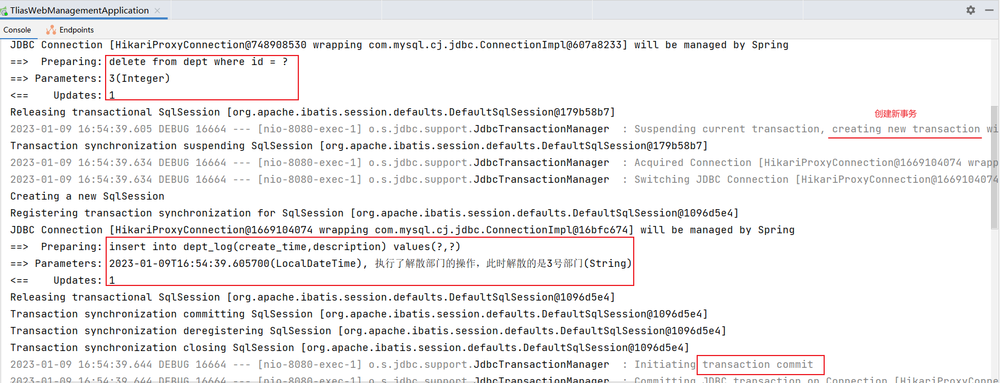
那此时，DeptServiceImpl中的delete方法运行时，会开启一个事务。 当调用 deptLogService.insert(deptLog) 时，也会创建一个新的事务，那此时，当insert方法运行完毕之后，事务就已经提交了。 即使外部的事务出现异常，内部已经提交的事务，也不会回滚了，因为是两个独立的事务。
到此事务传播行为已演示完成，事务的传播行为我们只需要掌握两个：REQUIRED、REQUIRES_NEW。
REQUIRED ：大部分情况下都是用该传播行为即可。
REQUIRES_NEW ：当我们不希望事务之间相互影响时，可以使用该传播行为。比如：下订单前需要记录日志，不论订单保存成功与否，都需要保证日志记录能够记录成功。
2. AOP基础
学习完spring的事务管理之后，接下来我们进入到AOP的学习。 AOP也是spring框架的第二大核心，我们先来学习AOP的基础。
在AOP基础这个阶段，我们首先介绍一下什么是AOP，再通过一个快速入门程序，让大家快速体验AOP程序的开发。最后再介绍AOP当中所涉及到的一些核心的概念。
2.1 AOP概述
什么是AOP？
- AOP英文全称：Aspect Oriented Programming（面向切面编程、面向方面编程），其实说白了，面向切面编程就是面向特定方法编程。
那什么又是面向方法编程呢，为什么又需要面向方法编程呢？来我们举个例子做一个说明：
比如，我们这里有一个项目，项目中开发了很多的业务功能。
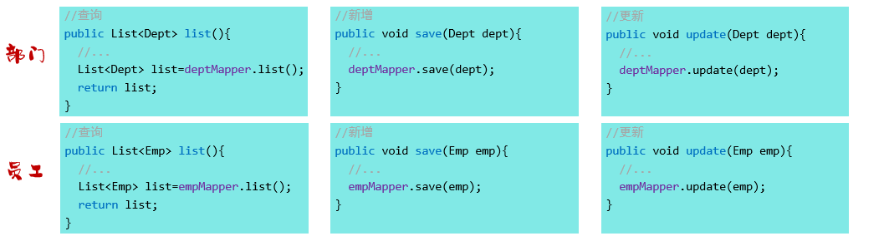
然而有一些业务功能执行效率比较低，执行耗时较长，我们需要针对于这些业务方法进行优化。 那首先第一步就需要定位出执行耗时比较长的业务方法，再针对于业务方法再来进行优化。
此时我们就需要统计当前这个项目当中每一个业务方法的执行耗时。那么统计每一个业务方法的执行耗时该怎么实现？
可能多数人首先想到的就是在每一个业务方法运行之前，记录这个方法运行的开始时间。在这个方法运行完毕之后，再来记录这个方法运行的结束时间。拿结束时间减去开始时间，不就是这个方法的执行耗时吗？
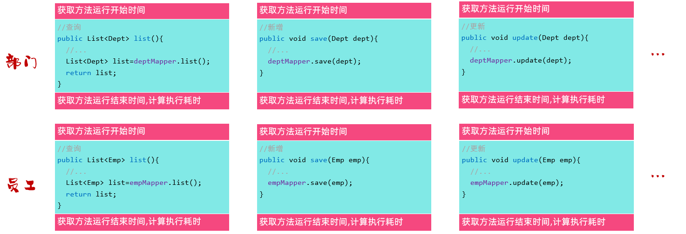
以上分析的实现方式是可以解决需求问题的。但是对于一个项目来讲，里面会包含很多的业务模块，每个业务模块又包含很多增删改查的方法，如果我们要在每一个模块下的业务方法中，添加记录开始时间、结束时间、计算执行耗时的代码，就会让程序员的工作变得非常繁琐。
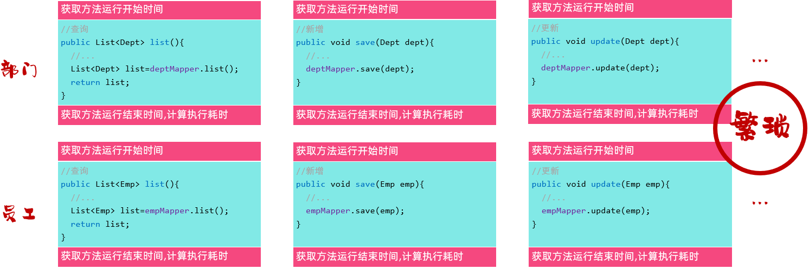
而AOP面向方法编程，就可以做到在不改动这些原始方法的基础上，针对特定的方法进行功能的增强。
AOP的作用：在程序运行期间在不修改源代码的基础上对已有方法进行增强（无侵入性: 解耦）
我们要想完成统计各个业务方法执行耗时的需求，我们只需要定义一个模板方法，将记录方法执行耗时这一部分公共的逻辑代码，定义在模板方法当中，在这个方法开始运行之前，来记录这个方法运行的开始时间，在方法结束运行的时候，再来记录方法运行的结束时间，中间就来运行原始的业务方法。
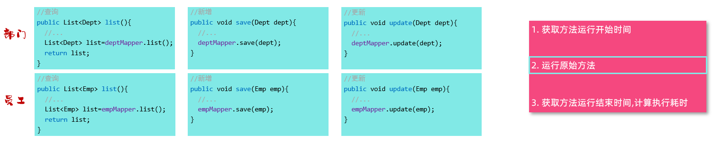
而中间运行的原始业务方法，可能是其中的一个业务方法，比如：我们只想通过 部门管理的 list 方法的执行耗时，那就只有这一个方法是原始业务方法。 而如果，我们是先想统计所有部门管理的业务方法执行耗时，那此时，所有的部门管理的业务方法都是 原始业务方法。 那面向这样的指定的一个或多个方法进行编程，我们就称之为 面向切面编程。
那此时，当我们再调用部门管理的 list 业务方法时啊，并不会直接执行 list 方法的逻辑，而是会执行我们所定义的 模板方法 ， 然后再模板方法中：
- 记录方法运行开始时间
- 运行原始的业务方法（那此时原始的业务方法，就是 list 方法）
- 记录方法运行结束时间，计算方法执行耗时
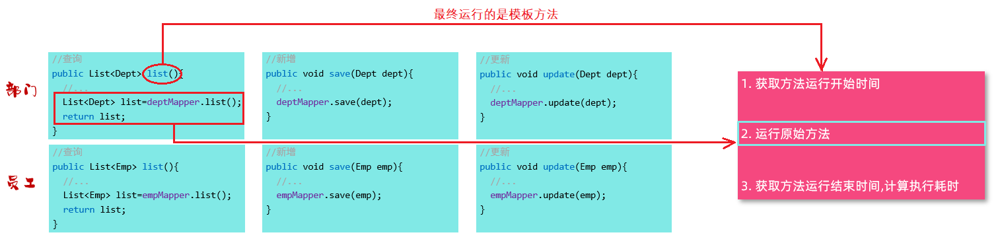
不论，我们运行的是那个业务方法，最后其实运行的就是我们定义的模板方法，而在模板方法中，就完成了原始方法执行耗时的统计操作 。(那这样呢，我们就通过一个模板方法就完成了指定的一个或多个业务方法执行耗时的统计)
而大家会发现，这个流程，我们是不是似曾相识啊？
对了，就是和我们之前所学习的动态代理技术是非常类似的。 我们所说的模板方法，其实就是代理对象中所定义的方法，那代理对象中的方法以及根据对应的业务需要， 完成了对应的业务功能，当运行原始业务方法时，就会运行代理对象中的方法，从而实现统计业务方法执行耗时的操作。
其实，AOP面向切面编程和OOP面向对象编程一样，它们都仅仅是一种编程思想，而动态代理技术是这种思想最主流的实现方式。而Spring的AOP是Spring框架的高级技术，旨在管理bean对象的过程中底层使用动态代理机制，对特定的方法进行编程(功能增强)。
AOP的优势：
- 减少重复代码
- 提高开发效率
- 维护方便
2.2 AOP快速入门
在了解了什么是AOP后，我们下面通过一个快速入门程序，体验下AOP的开发，并掌握Spring中AOP的开发步骤。
**需求：**统计各个业务层方法执行耗时。
实现步骤：
- 导入依赖：在pom.xml中导入AOP的依赖
- 编写AOP程序：针对于特定方法根据业务需要进行编程
为演示方便，可以自建新项目或导入提供的
springboot-aop-quickstart项目工程
pom.xml
<dependency>
<groupId>org.springframework.boot</groupId>
<artifactId>spring-boot-starter-aop</artifactId>
</dependency>
AOP程序：TimeAspect
@Component
@Aspect //当前类为切面类
@Slf4j
public class TimeAspect {
@Around("execution(* com.itheima.service.*.*(..))")
public Object recordTime(ProceedingJoinPoint pjp) throws Throwable {
//记录方法执行开始时间
long begin = System.currentTimeMillis();
//执行原始方法
Object result = pjp.proceed();
//记录方法执行结束时间
long end = System.currentTimeMillis();
//计算方法执行耗时
log.info(pjp.getSignature()+"执行耗时: {}毫秒",end-begin);
return result;
}
}
重新启动SpringBoot服务测试程序：
- 查询3号部门信息
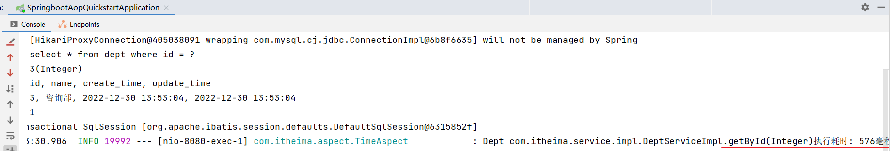
我们可以再测试下：查询所有部门信息（同样执行AOP程序）
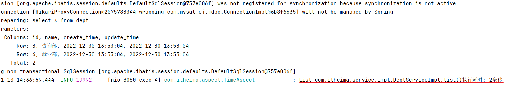
我们通过AOP入门程序完成了业务方法执行耗时的统计，那其实AOP的功能远不止于此，常见的应用场景如下：
- 记录系统的操作日志
- 权限控制
- 事务管理：我们前面所讲解的Spring事务管理，底层其实也是通过AOP来实现的，只要添加@Transactional注解之后，AOP程序自动会在原始方法运行前先来开启事务，在原始方法运行完毕之后提交或回滚事务
这些都是AOP应用的典型场景。
通过入门程序，我们也应该感受到了AOP面向切面编程的一些优势：
-
代码无侵入：没有修改原始的业务方法，就已经对原始的业务方法进行了功能的增强或者是功能的改变
-
减少了重复代码
-
提高开发效率
-
维护方便
2.3 AOP核心概念
通过SpringAOP的快速入门，感受了一下AOP面向切面编程的开发方式。下面我们再来学习AOP当中涉及到的一些核心概念。
1. 连接点：JoinPoint，可以被AOP控制的方法（暗含方法执行时的相关信息）
连接点指的是可以被aop控制的方法。例如：入门程序当中所有的业务方法都是可以被aop控制的方法。
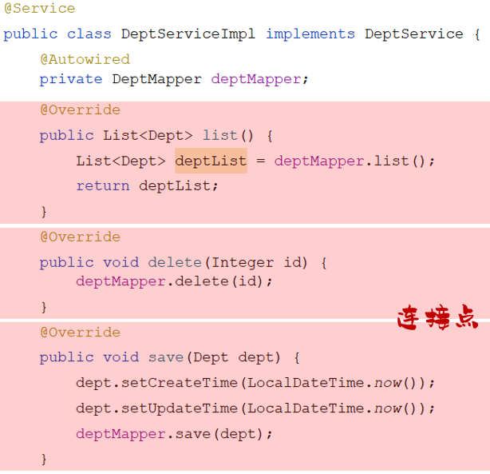
在SpringAOP提供的JoinPoint当中，封装了连接点方法在执行时的相关信息。（后面会有具体的讲解）
2. 通知：Advice，指哪些重复的逻辑，也就是共性功能（最终体现为一个方法）
在入门程序中是需要统计各个业务方法的执行耗时的，此时我们就需要在这些业务方法运行开始之前，先记录这个方法运行的开始时间，在每一个业务方法运行结束的时候，再来记录这个方法运行的结束时间。
但是在AOP面向切面编程当中，我们只需要将这部分重复的代码逻辑抽取出来单独定义。抽取出来的这一部分重复的逻辑，也就是共性的功能。
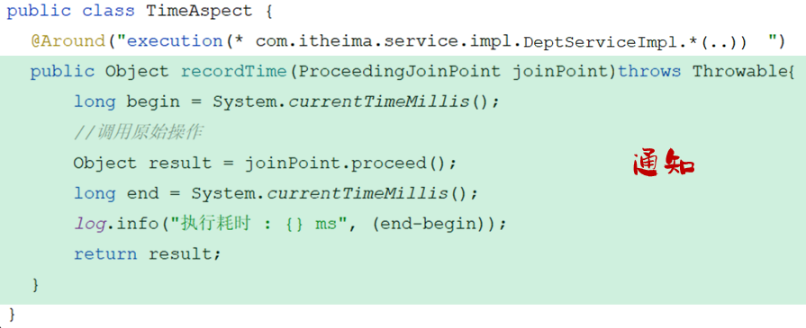
3. 切入点：PointCut，匹配连接点的条件，通知仅会在切入点方法执行时被应用
在通知当中，我们所定义的共性功能到底要应用在哪些方法上？此时就涉及到了切入点pointcut概念。切入点指的是匹配连接点的条件。通知仅会在切入点方法运行时才会被应用。
在aop的开发当中，我们通常会通过一个切入点表达式来描述切入点(后面会有详解)。
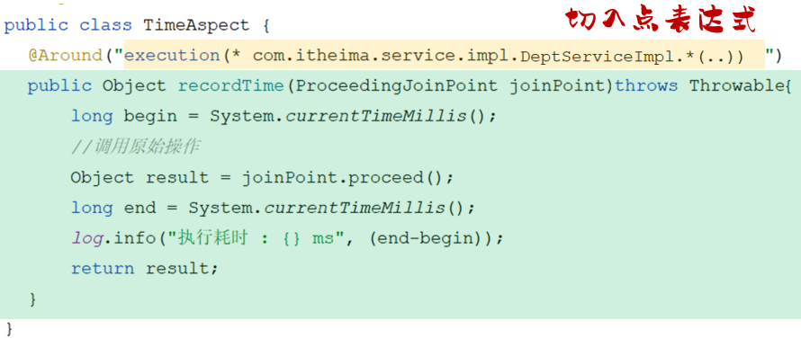
假如：切入点表达式改为DeptServiceImpl.list()，此时就代表仅仅只有list这一个方法是切入点。只有list()方法在运行的时候才会应用通知。
4. 切面：Aspect，描述通知与切入点的对应关系（通知+切入点）
当通知和切入点结合在一起，就形成了一个切面。通过切面就能够描述当前aop程序需要针对于哪个原始方法，在什么时候执行什么样的操作。
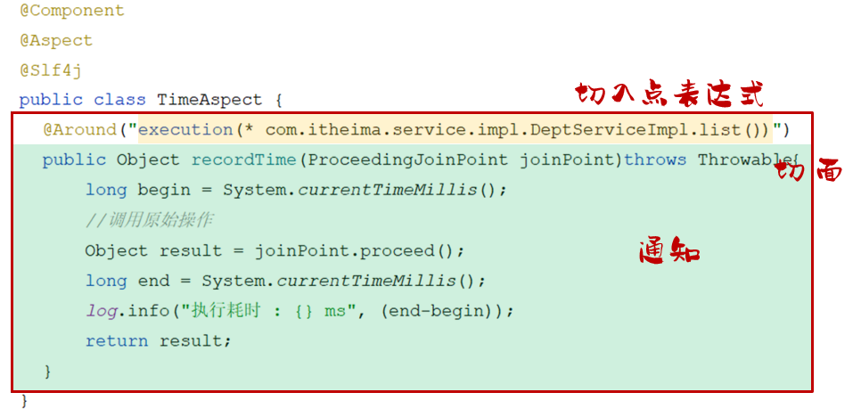
切面所在的类，我们一般称为切面类（被@Aspect注解标识的类）
5. 目标对象：Target，通知所应用的对象
目标对象指的就是通知所应用的对象，我们就称之为目标对象。
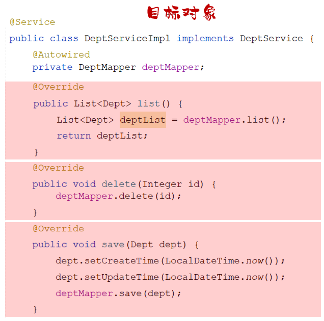
AOP的核心概念我们介绍完毕之后，接下来我们再来分析一下我们所定义的通知是如何与目标对象结合在一起，对目标对象当中的方法进行功能增强的。
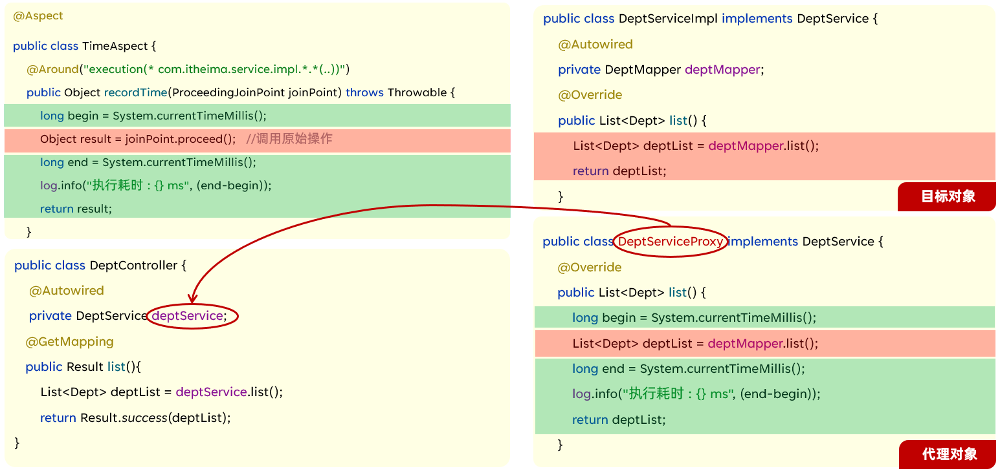
Spring的AOP底层是基于动态代理技术来实现的，也就是说在程序运行的时候，会自动的基于动态代理技术为目标对象生成一个对应的代理对象。在代理对象当中就会对目标对象当中的原始方法进行功能的增强。
3. AOP进阶
AOP的基础知识学习完之后，下面我们对AOP当中的各个细节进行详细的学习。主要分为4个部分：
- 通知类型
- 通知顺序
- 切入点表达式
- 连接点
我们先来学习第一部分通知类型。
3.1 通知类型
在入门程序当中，我们已经使用了一种功能最为强大的通知类型：Around环绕通知。
@Around("execution(* com.itheima.service.*.*(..))")
public Object recordTime(ProceedingJoinPoint pjp) throws Throwable {
//记录方法执行开始时间
long begin = System.currentTimeMillis();
//执行原始方法
Object result = pjp.proceed();
//记录方法执行结束时间
long end = System.currentTimeMillis();
//计算方法执行耗时
log.info(pjp.getSignature()+"执行耗时: {}毫秒",end-begin);
return result;
}
只要我们在通知方法上加上了@Around注解，就代表当前通知是一个环绕通知。
Spring中AOP的通知类型：
- @Around：环绕通知，此注解标注的通知方法在目标方法前、后都被执行
- @Before：前置通知，此注解标注的通知方法在目标方法前被执行
- @After ：后置通知，此注解标注的通知方法在目标方法后被执行，无论是否有异常都会执行
- @AfterReturning ： 返回后通知，此注解标注的通知方法在目标方法后被执行，有异常不会执行
- @AfterThrowing ： 异常后通知，此注解标注的通知方法发生异常后执行
下面我们通过代码演示，来加深对于不同通知类型的理解：
@Slf4j
@Component
@Aspect
public class MyAspect1 {
//前置通知
@Before("execution(* com.itheima.service.*.*(..))")
public void before(JoinPoint joinPoint){
log.info("before ...");
}
//环绕通知
@Around("execution(* com.itheima.service.*.*(..))")
public Object around(ProceedingJoinPoint proceedingJoinPoint) throws Throwable {
log.info("around before ...");
//调用目标对象的原始方法执行
Object result = proceedingJoinPoint.proceed();
//原始方法如果执行时有异常，环绕通知中的后置代码不会在执行了
log.info("around after ...");
return result;
}
//后置通知
@After("execution(* com.itheima.service.*.*(..))")
public void after(JoinPoint joinPoint){
log.info("after ...");
}
//返回后通知（程序在正常执行的情况下，会执行的后置通知）
@AfterReturning("execution(* com.itheima.service.*.*(..))")
public void afterReturning(JoinPoint joinPoint){
log.info("afterReturning ...");
}
//异常通知（程序在出现异常的情况下，执行的后置通知）
@AfterThrowing("execution(* com.itheima.service.*.*(..))")
public void afterThrowing(JoinPoint joinPoint){
log.info("afterThrowing ...");
}
}
重新启动SpringBoot服务，进行测试：
1. 没有异常情况下：
- 使用postman测试查询所有部门数据
- 查看idea中控制台日志输出
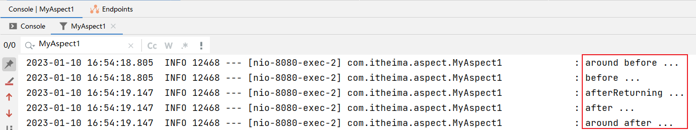
程序没有发生异常的情况下，@AfterThrowing标识的通知方法不会执行。
2. 出现异常情况下：
修改DeptServiceImpl业务实现类中的代码： 添加异常
@Slf4j
@Service
public class DeptServiceImpl implements DeptService {
@Autowired
private DeptMapper deptMapper;
@Override
public List<Dept> list() {
List<Dept> deptList = deptMapper.list();
//模拟异常
int num = 10/0;
return deptList;
}
//省略其他代码...
}
重新启动SpringBoot服务，测试发生异常情况下通知的执行：
- 查看idea中控制台日志输出
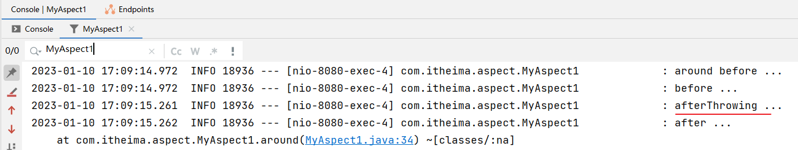
程序发生异常的情况下：
@AfterReturning标识的通知方法不会执行，@AfterThrowing标识的通知方法执行了
@Around环绕通知中原始方法调用时有异常，通知中的环绕后的代码逻辑也不会在执行了 （因为原始方法调用已经出异常了）
在使用通知时的注意事项：
- @Around环绕通知需要自己调用 ProceedingJoinPoint.proceed() 来让原始方法执行，其他通知不需要考虑目标方法执行
- @Around环绕通知方法的返回值，必须指定为Object，来接收原始方法的返回值，否则原始方法执行完毕，是获取不到返回值的。
五种常见的通知类型，我们已经测试完毕了，此时我们再来看一下刚才所编写的代码，有什么问题吗？
//前置通知
@Before("execution(* com.itheima.service.*.*(..))")
//环绕通知
@Around("execution(* com.itheima.service.*.*(..))")
//后置通知
@After("execution(* com.itheima.service.*.*(..))")
//返回后通知（程序在正常执行的情况下，会执行的后置通知）
@AfterReturning("execution(* com.itheima.service.*.*(..))")
//异常通知（程序在出现异常的情况下，执行的后置通知）
@AfterThrowing("execution(* com.itheima.service.*.*(..))")
我们发现啊，每一个注解里面都指定了切入点表达式，而且这些切入点表达式都一模一样。此时我们的代码当中就存在了大量的重复性的切入点表达式，假如此时切入点表达式需要变动，就需要将所有的切入点表达式一个一个的来改动，就变得非常繁琐了。
怎么来解决这个切入点表达式重复的问题？ 答案就是：抽取
Spring提供了@PointCut注解，该注解的作用是将公共的切入点表达式抽取出来，需要用到时引用该切入点表达式即可。
@Slf4j
@Component
@Aspect
public class MyAspect1 {
//切入点方法（公共的切入点表达式）
@Pointcut("execution(* com.itheima.service.*.*(..))")
private void pt(){
}
//前置通知（引用切入点）
@Before("pt()")
public void before(JoinPoint joinPoint){
log.info("before ...");
}
//环绕通知
@Around("pt()")
public Object around(ProceedingJoinPoint proceedingJoinPoint) throws Throwable {
log.info("around before ...");
//调用目标对象的原始方法执行
Object result = proceedingJoinPoint.proceed();
//原始方法在执行时：发生异常
//后续代码不在执行
log.info("around after ...");
return result;
}
//后置通知
@After("pt()")
public void after(JoinPoint joinPoint){
log.info("after ...");
}
//返回后通知（程序在正常执行的情况下，会执行的后置通知）
@AfterReturning("pt()")
public void afterReturning(JoinPoint joinPoint){
log.info("afterReturning ...");
}
//异常通知（程序在出现异常的情况下，执行的后置通知）
@AfterThrowing("pt()")
public void afterThrowing(JoinPoint joinPoint){
log.info("afterThrowing ...");
}
}
需要注意的是：当切入点方法使用private修饰时，仅能在当前切面类中引用该表达式， 当外部其他切面类中也要引用当前类中的切入点表达式，就需要把private改为public，而在引用的时候，具体的语法为：
全类名.方法名()，具体形式如下：
@Slf4j
@Component
@Aspect
public class MyAspect2 {
//引用MyAspect1切面类中的切入点表达式
@Before("com.itheima.aspect.MyAspect1.pt()")
public void before(){
log.info("MyAspect2 -> before ...");
}
}
3.2 通知顺序
讲解完了Spring中AOP所支持的5种通知类型之后，接下来我们再来研究通知的执行顺序。
当在项目开发当中，我们定义了多个切面类，而多个切面类中多个切入点都匹配到了同一个目标方法。此时当目标方法在运行的时候，这多个切面类当中的这些通知方法都会运行。
此时我们就有一个疑问，这多个通知方法到底哪个先运行，哪个后运行？ 下面我们通过程序来验证（这里呢，我们就定义两种类型的通知进行测试，一种是前置通知@Before，一种是后置通知@After）
定义多个切面类：
@Slf4j
@Component
@Aspect
public class MyAspect2 {
//前置通知
@Before("execution(* com.itheima.service.*.*(..))")
public void before(){
log.info("MyAspect2 -> before ...");
}
//后置通知
@After("execution(* com.itheima.service.*.*(..))")
public void after(){
log.info("MyAspect2 -> after ...");
}
}
@Slf4j
@Component
@Aspect
public class MyAspect3 {
//前置通知
@Before("execution(* com.itheima.service.*.*(..))")
public void before(){
log.info("MyAspect3 -> before ...");
}
//后置通知
@After("execution(* com.itheima.service.*.*(..))")
public void after(){
log.info("MyAspect3 -> after ...");
}
}
@Slf4j
@Component
@Aspect
public class MyAspect4 {
//前置通知
@Before("execution(* com.itheima.service.*.*(..))")
public void before(){
log.info("MyAspect4 -> before ...");
}
//后置通知
@After("execution(* com.itheima.service.*.*(..))")
public void after(){
log.info("MyAspect4 -> after ...");
}
}
重新启动SpringBoot服务，测试通知的执行顺序：
备注：
把DeptServiceImpl实现类中模拟异常的代码删除或注释掉。
注释掉其他切面类(把@Aspect注释即可)，仅保留MyAspect2、MyAspect3、MyAspect4 ，这样就可以清晰看到执行的结果，而不被其他切面类干扰。
- 使用postman测试查询所有部门数据
- 查看idea中控制台日志输出
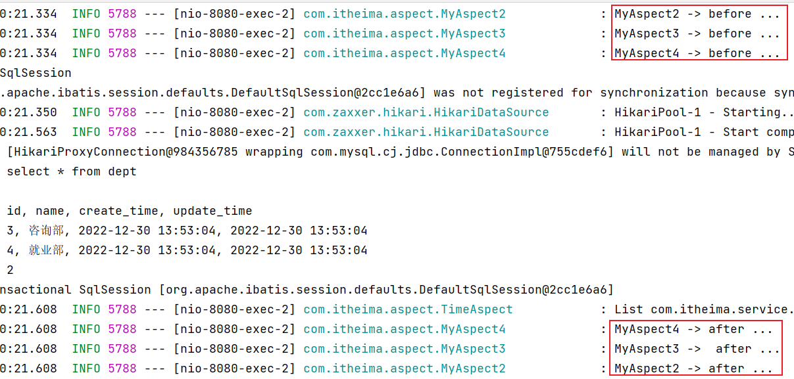
通过以上程序运行可以看出在不同切面类中，默认按照切面类的类名字母排序：
- 目标方法前的通知方法：字母排名靠前的先执行
- 目标方法后的通知方法：字母排名靠前的后执行
如果我们想控制通知的执行顺序有两种方式：
- 修改切面类的类名（这种方式非常繁琐、而且不便管理）
- 使用Spring提供的@Order注解
使用@Order注解，控制通知的执行顺序：
@Slf4j
@Component
@Aspect
@Order(2) //切面类的执行顺序（前置通知：数字越小先执行; 后置通知：数字越小越后执行）
public class MyAspect2 {
//前置通知
@Before("execution(* com.itheima.service.*.*(..))")
public void before(){
log.info("MyAspect2 -> before ...");
}
//后置通知
@After("execution(* com.itheima.service.*.*(..))")
public void after(){
log.info("MyAspect2 -> after ...");
}
}
@Slf4j
@Component
@Aspect
@Order(3) //切面类的执行顺序（前置通知：数字越小先执行; 后置通知：数字越小越后执行）
public class MyAspect3 {
//前置通知
@Before("execution(* com.itheima.service.*.*(..))")
public void before(){
log.info("MyAspect3 -> before ...");
}
//后置通知
@After("execution(* com.itheima.service.*.*(..))")
public void after(){
log.info("MyAspect3 -> after ...");
}
}
@Slf4j
@Component
@Aspect
@Order(1) //切面类的执行顺序（前置通知：数字越小先执行; 后置通知：数字越小越后执行）
public class MyAspect4 {
//前置通知
@Before("execution(* com.itheima.service.*.*(..))")
public void before(){
log.info("MyAspect4 -> before ...");
}
//后置通知
@After("execution(* com.itheima.service.*.*(..))")
public void after(){
log.info("MyAspect4 -> after ...");
}
}
重新启动SpringBoot服务，测试通知执行顺序：
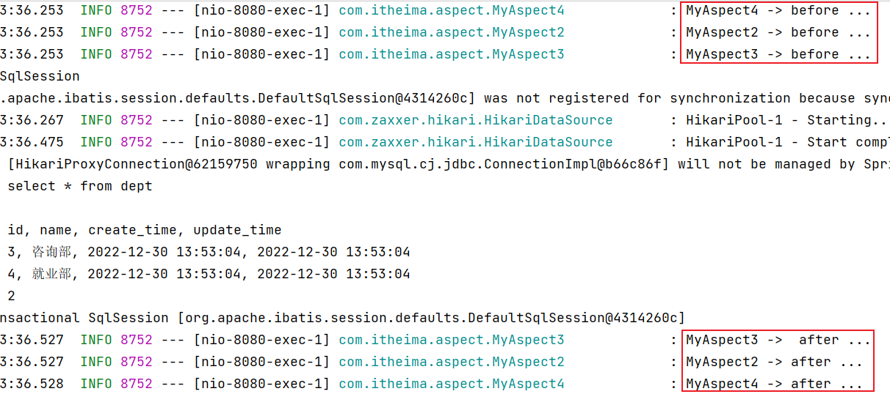
通知的执行顺序大家主要知道两点即可：
- 不同的切面类当中，默认情况下通知的执行顺序是与切面类的类名字母排序是有关系的
- 可以在切面类上面加上@Order注解，来控制不同的切面类通知的执行顺序
3.3 切入点表达式
从AOP的入门程序到现在，我们一直都在使用切入点表达式来描述切入点。下面我们就来详细的介绍一下切入点表达式的具体写法。
切入点表达式：
-
描述切入点方法的一种表达式
-
作用：主要用来决定项目中的哪些方法需要加入通知
-
常见形式：
- execution(……)：根据方法的签名来匹配
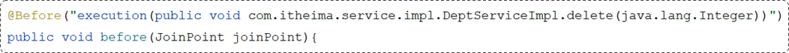
- @annotation(……) ：根据注解匹配
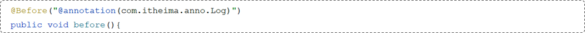
首先我们先学习第一种最为常见的execution切入点表达式。
3.3.1 execution
execution主要根据方法的返回值、包名、类名、方法名、方法参数等信息来匹配，语法为：
execution(访问修饰符? 返回值 包名.类名.?方法名(方法参数) throws 异常?)
其中带?的表示可以省略的部分
-
访问修饰符：可省略（比如: public、protected）
-
包名.类名： 可省略
-
throws 异常：可省略（注意是方法上声明抛出的异常，不是实际抛出的异常）
示例：
@Before("execution(void com.itheima.service.impl.DeptServiceImpl.delete(java.lang.Integer))")
可以使用通配符描述切入点
-
*：单个独立的任意符号，可以通配任意返回值、包名、类名、方法名、任意类型的一个参数，也可以通配包、类、方法名的一部分 -
..：多个连续的任意符号，可以通配任意层级的包，或任意类型、任意个数的参数
切入点表达式的语法规则：
- 方法的访问修饰符可以省略
- 返回值可以使用
*号代替（任意返回值类型） - 包名可以使用
*号代替，代表任意包（一层包使用一个*） - 使用
..配置包名，标识此包以及此包下的所有子包 - 类名可以使用
*号代替，标识任意类 - 方法名可以使用
*号代替，表示任意方法 - 可以使用
*配置参数，一个任意类型的参数 - 可以使用
..配置参数，任意个任意类型的参数
切入点表达式示例
-
省略方法的修饰符号
execution(void com.itheima.service.impl.DeptServiceImpl.delete(java.lang.Integer)) -
使用
*代替返回值类型execution(* com.itheima.service.impl.DeptServiceImpl.delete(java.lang.Integer)) -
使用
*代替包名（一层包使用一个*）execution(* com.itheima.*.*.DeptServiceImpl.delete(java.lang.Integer)) -
使用
..省略包名execution(* com..DeptServiceImpl.delete(java.lang.Integer)) -
使用
*代替类名execution(* com..*.delete(java.lang.Integer)) -
使用
*代替方法名execution(* com..*.*(java.lang.Integer)) -
使用
*代替参数execution(* com.itheima.service.impl.DeptServiceImpl.delete(*)) -
使用
..省略参数execution(* com..*.*(..))
注意事项：
-
根据业务需要，可以使用 且（&&）、或（||）、非（!） 来组合比较复杂的切入点表达式。
execution(* com.itheima.service.DeptService.list(..)) || execution(* com.itheima.service.DeptService.delete(..))
切入点表达式的书写建议：
-
所有业务方法名在命名时尽量规范，方便切入点表达式快速匹配。如：查询类方法都是 find 开头，更新类方法都是update开头
//业务类 @Service public class DeptServiceImpl implements DeptService { public List<Dept> findAllDept() { //省略代码... } public Dept findDeptById(Integer id) { //省略代码... } public void updateDeptById(Integer id) { //省略代码... } public void updateDeptByMoreCondition(Dept dept) { //省略代码... } //其他代码... }//匹配DeptServiceImpl类中以find开头的方法 execution(* com.itheima.service.impl.DeptServiceImpl.find*(..)) -
描述切入点方法通常基于接口描述，而不是直接描述实现类，增强拓展性
execution(* com.itheima.service.DeptService.*(..)) -
在满足业务需要的前提下，尽量缩小切入点的匹配范围。如：包名匹配尽量不使用 ..，使用 * 匹配单个包
execution(* com.itheima.*.*.DeptServiceImpl.find*(..))
3.3.2 @annotation
已经学习了execution切入点表达式的语法。那么如果我们要匹配多个无规则的方法，比如：list()和 delete()这两个方法。这个时候我们基于execution这种切入点表达式来描述就不是很方便了。而在之前我们是将两个切入点表达式组合在了一起完成的需求，这个是比较繁琐的。
我们可以借助于另一种切入点表达式annotation来描述这一类的切入点，从而来简化切入点表达式的书写。
实现步骤：
-
编写自定义注解
-
在业务类要做为连接点的方法上添加自定义注解
自定义注解：MyLog
@Target(ElementType.METHOD)
@Retention(RetentionPolicy.RUNTIME)
public @interface MyLog {
}
业务类：DeptServiceImpl
@Slf4j
@Service
public class DeptServiceImpl implements DeptService {
@Autowired
private DeptMapper deptMapper;
@Override
@MyLog //自定义注解（表示：当前方法属于目标方法）
public List<Dept> list() {
List<Dept> deptList = deptMapper.list();
//模拟异常
//int num = 10/0;
return deptList;
}
@Override
@MyLog //自定义注解（表示：当前方法属于目标方法）
public void delete(Integer id) {
//1. 删除部门
deptMapper.delete(id);
}
@Override
public void save(Dept dept) {
dept.setCreateTime(LocalDateTime.now());
dept.setUpdateTime(LocalDateTime.now());
deptMapper.save(dept);
}
@Override
public Dept getById(Integer id) {
return deptMapper.getById(id);
}
@Override
public void update(Dept dept) {
dept.setUpdateTime(LocalDateTime.now());
deptMapper.update(dept);
}
}
切面类
@Slf4j
@Component
@Aspect
public class MyAspect6 {
//针对list方法、delete方法进行前置通知和后置通知
//前置通知
@Before("@annotation(com.itheima.anno.MyLog)")
public void before(){
log.info("MyAspect6 -> before ...");
}
//后置通知
@After("@annotation(com.itheima.anno.MyLog)")
public void after(){
log.info("MyAspect6 -> after ...");
}
}
重启SpringBoot服务，测试查询所有部门数据，查看控制台日志：
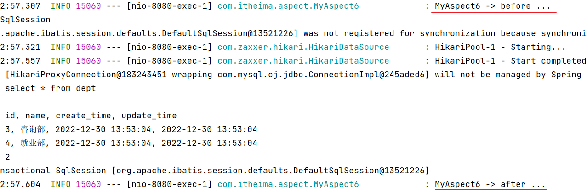
到此我们两种常见的切入点表达式我已经介绍完了。
- execution切入点表达式
- 根据我们所指定的方法的描述信息来匹配切入点方法，这种方式也是最为常用的一种方式
- 如果我们要匹配的切入点方法的方法名不规则，或者有一些比较特殊的需求，通过execution切入点表达式描述比较繁琐
- annotation 切入点表达式
- 基于注解的方式来匹配切入点方法。这种方式虽然多一步操作，我们需要自定义一个注解，但是相对来比较灵活。我们需要匹配哪个方法，就在方法上加上对应的注解就可以了
3.4 连接点
讲解完了切入点表达式之后，接下来我们再来讲解最后一个部分连接点。我们前面在讲解AOP核心概念的时候，我们提到过什么是连接点，连接点可以简单理解为可以被AOP控制的方法。
我们目标对象当中所有的方法是不是都是可以被AOP控制的方法。而在SpringAOP当中，连接点又特指方法的执行。
在Spring中用JoinPoint抽象了连接点，用它可以获得方法执行时的相关信息，如目标类名、方法名、方法参数等。
-
对于@Around通知，获取连接点信息只能使用ProceedingJoinPoint类型
-
对于其他四种通知，获取连接点信息只能使用JoinPoint，它是ProceedingJoinPoint的父类型
示例代码：
@Slf4j
@Component
@Aspect
public class MyAspect7 {
@Pointcut("@annotation(com.itheima.anno.MyLog)")
private void pt(){}
//前置通知
@Before("pt()")
public void before(JoinPoint joinPoint){
log.info(joinPoint.getSignature().getName() + " MyAspect7 -> before ...");
}
//后置通知
@Before("pt()")
public void after(JoinPoint joinPoint){
log.info(joinPoint.getSignature().getName() + " MyAspect7 -> after ...");
}
//环绕通知
@Around("pt()")
public Object around(ProceedingJoinPoint pjp) throws Throwable {
//获取目标类名
String name = pjp.getTarget().getClass().getName();
log.info("目标类名：{}",name);
//目标方法名
String methodName = pjp.getSignature().getName();
log.info("目标方法名：{}",methodName);
//获取方法执行时需要的参数
Object[] args = pjp.getArgs();
log.info("目标方法参数：{}", Arrays.toString(args));
//执行原始方法
Object returnValue = pjp.proceed();
return returnValue;
}
}
重新启动SpringBoot服务，执行查询部门数据的功能：
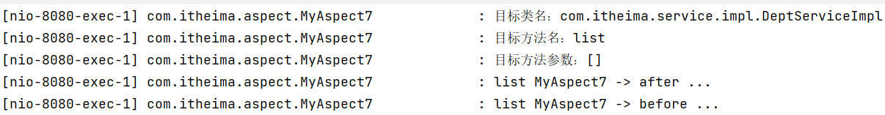
4. AOP案例
SpringAOP的相关知识我们就已经全部学习完毕了。最后我们要通过一个案例来对AOP进行一个综合的应用。
4.1 需求
需求：将案例中增、删、改相关接口的操作日志记录到数据库表中
- 就是当访问部门管理和员工管理当中的增、删、改相关功能接口时，需要详细的操作日志，并保存在数据表中，便于后期数据追踪。
操作日志信息包含：
- 操作人、操作时间、执行方法的全类名、执行方法名、方法运行时参数、返回值、方法执行时长
所记录的日志信息包括当前接口的操作人是谁操作的，什么时间点操作的，以及访问的是哪个类当中的哪个方法，在访问这个方法的时候传入进来的参数是什么，访问这个方法最终拿到的返回值是什么，以及整个接口方法的运行时长是多长时间。
4.2 分析
问题1：项目当中增删改相关的方法是不是有很多？
- 很多
问题2：我们需要针对每一个功能接口方法进行修改，在每一个功能接口当中都来记录这些操作日志吗？
- 这种做法比较繁琐
以上两个问题的解决方案：可以使用AOP解决(每一个增删改功能接口中要实现的记录操作日志的逻辑代码是相同)。
可以把这部分记录操作日志的通用的、重复性的逻辑代码抽取出来定义在一个通知方法当中，我们通过AOP面向切面编程的方式，在不改动原始功能的基础上来对原始的功能进行增强。目前我们所增强的功能就是来记录操作日志，所以也可以使用AOP的技术来实现。使用AOP的技术来实现也是最为简单，最为方便的。
问题3：既然要基于AOP面向切面编程的方式来完成的功能，那么我们要使用 AOP五种通知类型当中的哪种通知类型？
- 答案：环绕通知
所记录的操作日志当中包括：操作人、操作时间，访问的是哪个类、哪个方法、方法运行时参数、方法的返回值、方法的运行时长。
方法返回值，是在原始方法执行后才能获取到的。
方法的运行时长，需要原始方法运行之前记录开始时间，原始方法运行之后记录结束时间。通过计算获得方法的执行耗时。
基于以上的分析我们确定要使用Around环绕通知。
问题4：最后一个问题，切入点表达式我们该怎么写？
- 答案：使用annotation来描述表达式
要匹配业务接口当中所有的增删改的方法，而增删改方法在命名上没有共同的前缀或后缀。此时如果使用execution切入点表达式也可以，但是会比较繁琐。 当遇到增删改的方法名没有规律时，就可以使用 annotation切入点表达式
4.3 步骤
简单分析了一下大概的实现思路后，接下来我们就要来完成案例了。案例的实现步骤其实就两步：
- 准备工作
- 引入AOP的起步依赖
- 导入资料中准备好的数据库表结构，并引入对应的实体类
- 编码实现
- 自定义注解@Log
- 定义切面类，完成记录操作日志的逻辑
4.4 实现
4.4.1 准备工作
- AOP起步依赖
<!--AOP起步依赖-->
<dependency>
<groupId>org.springframework.boot</groupId>
<artifactId>spring-boot-starter-aop</artifactId>
</dependency>
- 导入资料中准备好的数据库表结构，并引入对应的实体类
数据表
-- 操作日志表
create table operate_log(
id int unsigned primary key auto_increment comment 'ID',
operate_user int unsigned comment '操作人',
operate_time datetime comment '操作时间',
class_name varchar(100) comment '操作的类名',
method_name varchar(100) comment '操作的方法名',
method_params varchar(1000) comment '方法参数',
return_value varchar(2000) comment '返回值',
cost_time bigint comment '方法执行耗时, 单位:ms'
) comment '操作日志表';
实体类
//操作日志实体类
@Data
@NoArgsConstructor
@AllArgsConstructor
public class OperateLog {
private Integer id; //主键ID
private Integer operateUser; //操作人ID
private LocalDateTime operateTime; //操作时间
private String className; //操作类名
private String methodName; //操作方法名
private String methodParams; //操作方法参数
private String returnValue; //操作方法返回值
private Long costTime; //操作耗时
}
Mapper接口
@Mapper
public interface OperateLogMapper {
//插入日志数据
@Insert("insert into operate_log (operate_user, operate_time, class_name, method_name, method_params, return_value, cost_time) " +
"values (#{operateUser}, #{operateTime}, #{className}, #{methodName}, #{methodParams}, #{returnValue}, #{costTime});")
public void insert(OperateLog log);
}
4.4.2 编码实现
- 自定义注解@Log
/**
* 自定义Log注解
*/
@Target({ElementType.METHOD})
@Documented
@Retention(RetentionPolicy.RUNTIME)
public @interface Log {
}
- 修改业务实现类，在增删改业务方法上添加@Log注解
@Slf4j
@Service
public class EmpServiceImpl implements EmpService {
@Autowired
private EmpMapper empMapper;
@Override
@Log
public void update(Emp emp) {
emp.setUpdateTime(LocalDateTime.now()); //更新修改时间为当前时间
empMapper.update(emp);
}
@Override
@Log
public void save(Emp emp) {
//补全数据
emp.setCreateTime(LocalDateTime.now());
emp.setUpdateTime(LocalDateTime.now());
//调用添加方法
empMapper.insert(emp);
}
@Override
@Log
public void delete(List<Integer> ids) {
empMapper.delete(ids);
}
//省略其他代码...
}
以同样的方式，修改EmpServiceImpl业务类
- 定义切面类，完成记录操作日志的逻辑
@Slf4j
@Component
@Aspect //切面类
public class LogAspect {
@Autowired
private HttpServletRequest request;
@Autowired
private OperateLogMapper operateLogMapper;
@Around("@annotation(com.itheima.anno.Log)")
public Object recordLog(ProceedingJoinPoint joinPoint) throws Throwable {
//操作人ID - 当前登录员工ID
//获取请求头中的jwt令牌, 解析令牌
String jwt = request.getHeader("token");
Claims claims = JwtUtils.parseJWT(jwt);
Integer operateUser = (Integer) claims.get("id");
//操作时间
LocalDateTime operateTime = LocalDateTime.now();
//操作类名
String className = joinPoint.getTarget().getClass().getName();
//操作方法名
String methodName = joinPoint.getSignature().getName();
//操作方法参数
Object[] args = joinPoint.getArgs();
String methodParams = Arrays.toString(args);
long begin = System.currentTimeMillis();
//调用原始目标方法运行
Object result = joinPoint.proceed();
long end = System.currentTimeMillis();
//方法返回值
String returnValue = JSONObject.toJSONString(result);
//操作耗时
Long costTime = end - begin;
//记录操作日志
OperateLog operateLog = new OperateLog(null,operateUser,operateTime,className,methodName,methodParams,returnValue,costTime);
operateLogMapper.insert(operateLog);
log.info("AOP记录操作日志: {}" , operateLog);
return result;
}
}
代码实现细节： 获取request对象，从请求头中获取到jwt令牌，解析令牌获取出当前用户的id。
重启SpringBoot服务，测试操作日志记录功能：
- 添加一个新的部门
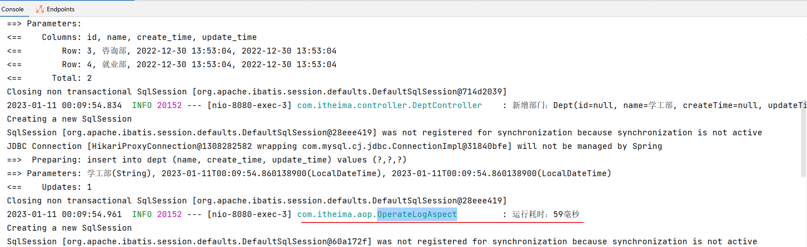
- 数据表
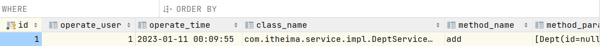